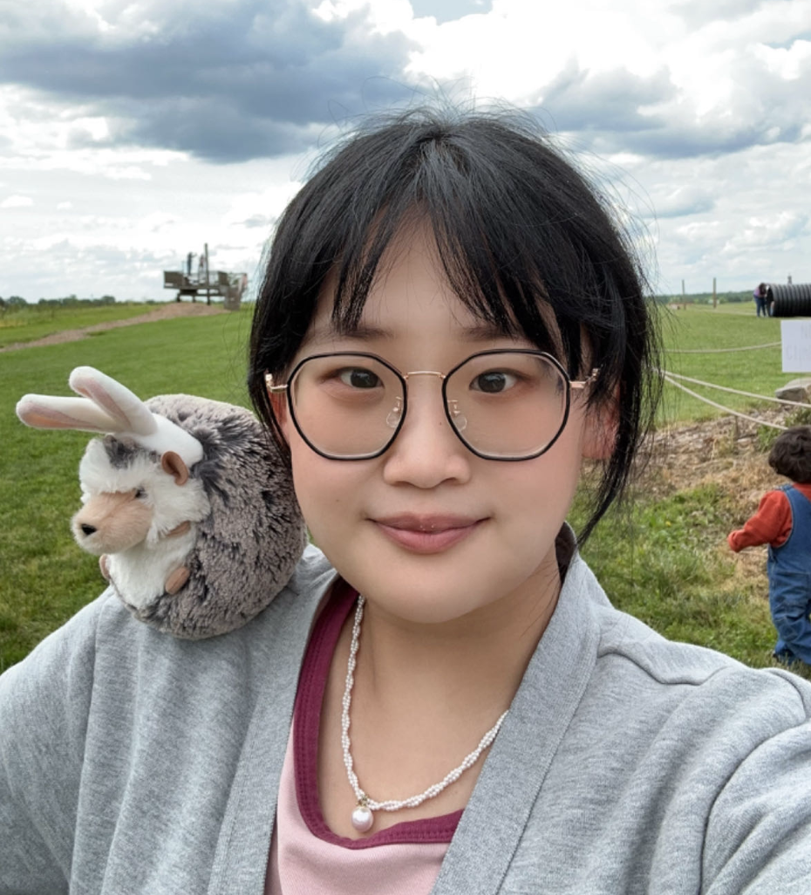

Presenters
Yaochen Zhu
Yaochen Zhu is a rising third-year Ph.D. student at the University of Virginia. Previously, He was a machine learning research intern at Netflix and and an applied research intern at LinkedIn. His research interests mainly lie in causal inference, large language models, as well as grounding them in specific data mining tasks.Yinhan He
Yinhan He is a second-year Ph.D. student at the University of Virginia.
Jing Ma
Jing Ma is an assistant professor at Case Western Reserve University.

Mengxuan Hu
Mengxuan Hu is a rising third-year Ph.D. student at the University of Virginia.Sheng Li
Sheng Li is a Quantitative Foundation Associate Professor of Data Science and an Associate Professor of Computer Science (by courtesy) at the University of Virginia (UVA)